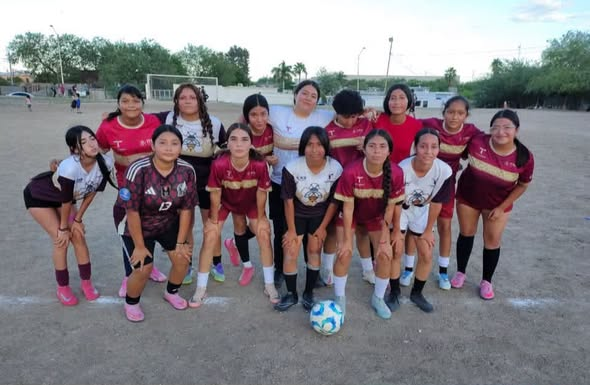
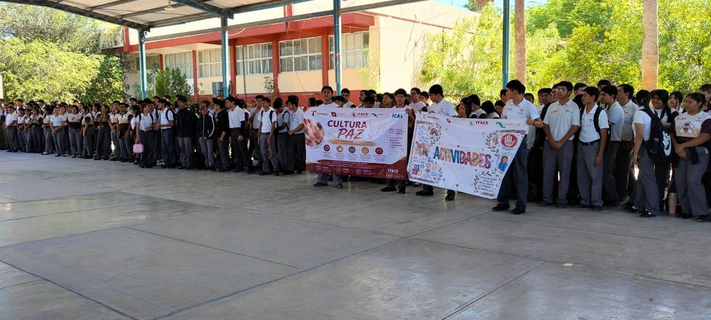
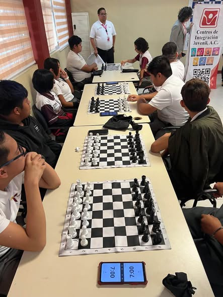
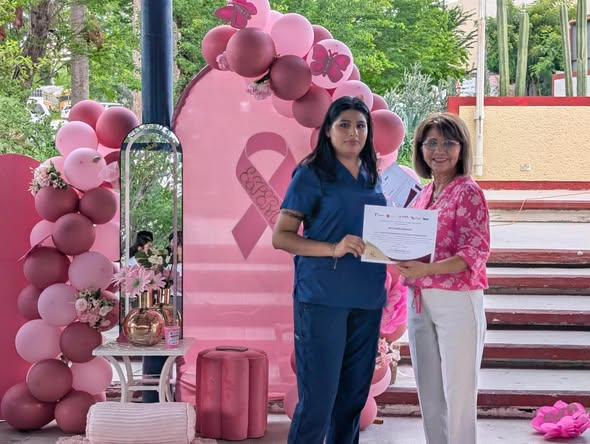
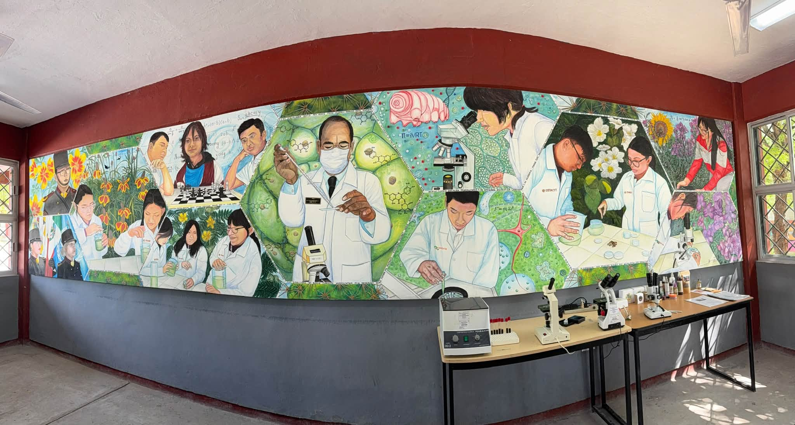
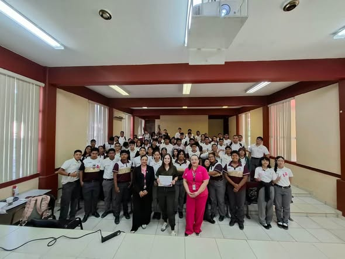
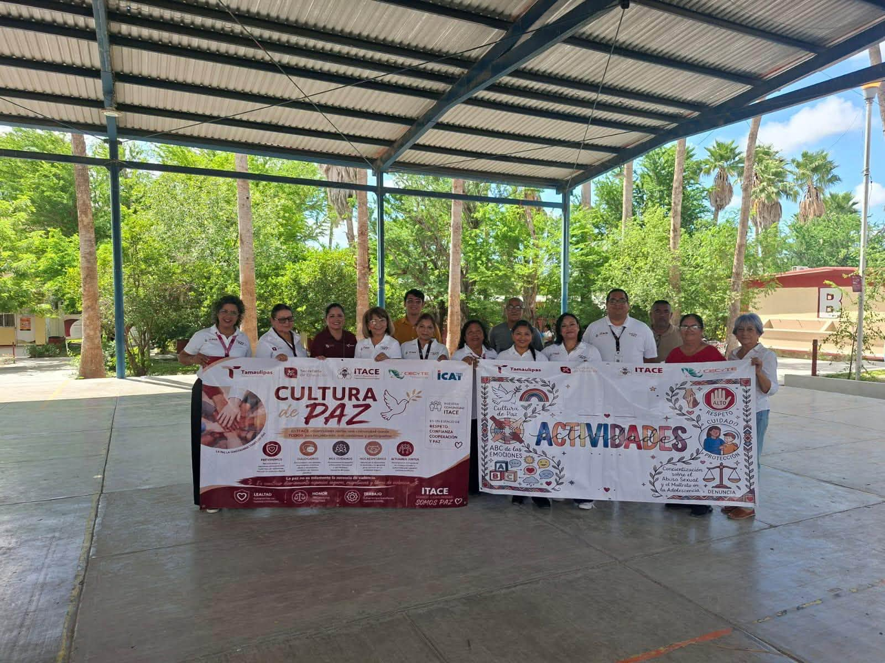
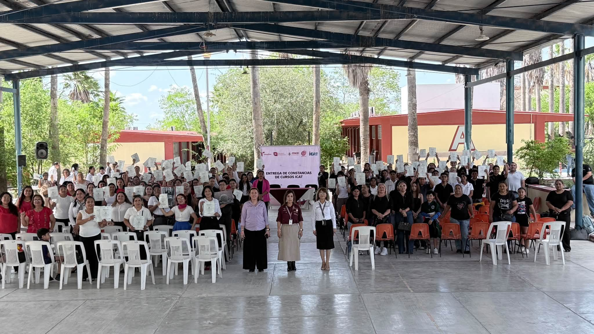
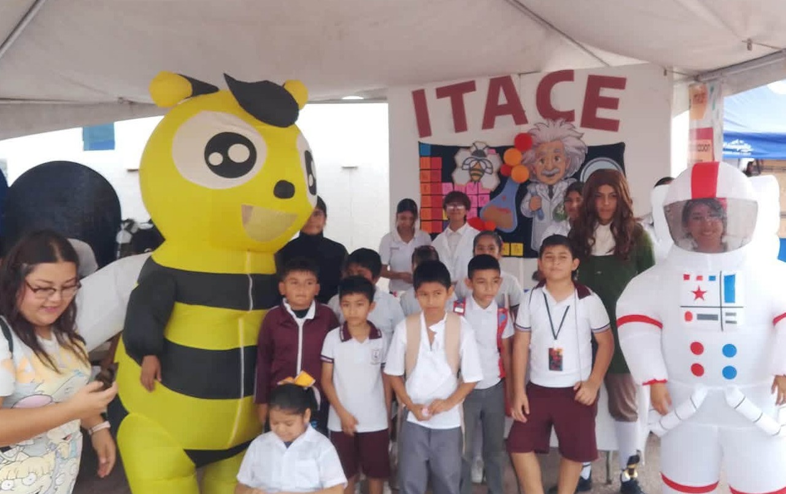
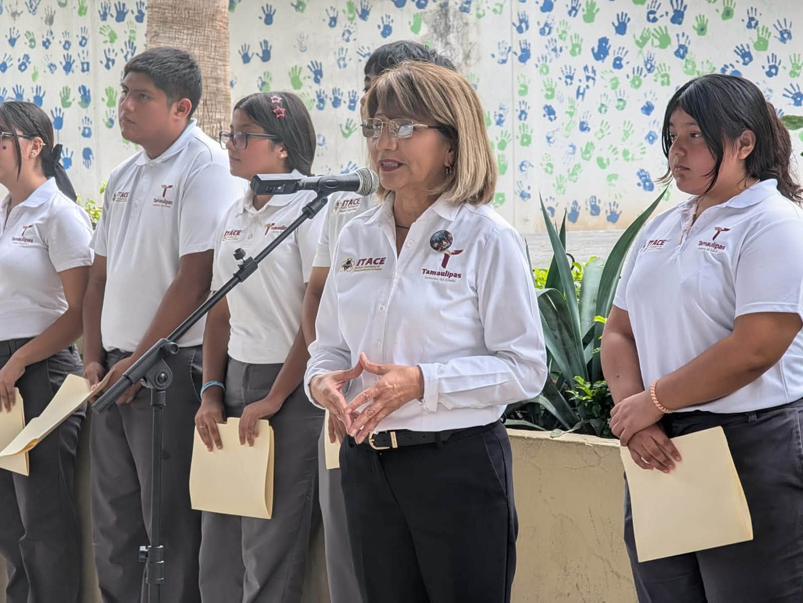

Conoce las acciones, los logros y las actividades del
Instituto Tamaulipeco de Capacitación para el Empleo.
En este espacio encontrarás las noticias y acontecimientos
más recientes del ITACE Plantel Reynosa.

1 de noviembre de 2026
ITACE Reynosa acerca su oferta educativa a estudiantes de secundaria
Personal del área de Vinculación visitó la Escuela
Secundaria General N.º 7 para compartir con estudiantes
de tercer grado información sobre las opciones
educativas y técnicas que ofrece el plantel.

1 de noviembre de 2026
Talento deportivo del ITACE Plantel Reynosa
Los equipos femeniles de voleibol y fútbol, así como
el equipo varonil de béisbol, representan al plantel
en ligas municipales y torneos interescolares,
demostrando su esfuerzo y compromiso deportivo.

31 de octubre de 2026
ITACE Plantel Reynosa celebra el Día de Muertos
La comunidad educativa participó en la elaboración
de un altar dedicado al personal del ITACE fallecido
y en un concurso de catrinas y catrines, promoviendo
las tradiciones y la identidad cultural mexicana.

30 de octubre de 2026
ITACE Reynosa comparte su oferta educativa en la Secundaria Técnica N.º 60
El Departamento de Vinculación visitó a estudiantes
de tercer grado para presentar las oportunidades
académicas y técnicas del instituto, además de
entregar material informativo.

30 de octubre de 2026
Promoción educativa en la Escuela Secundaria Técnica N.º 73
Personal del ITACE Reynosa realizó una visita
informativa para dar a conocer su oferta educativa
y las alternativas de formación técnica a los
próximos egresados de secundaria.

30 de octubre de 2026
Banda de Guerra, Escolta y Danza participan en ceremonia cívica
Los grupos representativos del plantel participaron
en los honores a la bandera de la Escuela Secundaria
General N.º 15 Enrique N. Rodríguez Alonso.
Durante la visita también se compartió información
sobre la oferta educativa del ITACE.

27 de octubre de 2026
Banda de Guerra y Danza del ITACE participan en ceremonia cívica
La Banda de Guerra y el Grupo de Danza acudieron
a la Escuela Secundaria Técnica N.º 60 Guillermo
González Camarena para participar en los honores
a la bandera y compartir información sobre el plantel.

23 de octubre de 2026
ITACE Reynosa participa en el Maratón de Cuentos, Mitos y Leyendas de Tamaulipas
La directora del plantel, C.P. Marta Gabriela Reyes
Anaya, personal docente y estudiantes participaron
en esta actividad cultural, acompañados por la
maestra Sandra Silva Camacho, para promover la
lectura y la identidad tamaulipeca.

21 de octubre de 2026
Actividades del programa ABC de las Emociones
Estudiantes del turno vespertino participaron en
actividades lúdicas enfocadas en el reconocimiento
y la expresión de emociones, fortaleciendo la
convivencia y el desarrollo socioemocional.

21 de octubre de 2026
Torneo amistoso de ajedrez en el ITACE Reynosa
Como parte de las actividades del programa ABC de
las Emociones, se realizó un torneo amistoso de
ajedrez. Los estudiantes reconocidos fueron
Carlos Naín Castillo Rivas, Saúl Guadalupe Salazar
Hernández y José Israel Méndez Bustos.

21 de octubre de 2026
Promueven la prevención del cáncer de mama
Durante la Semana Internacional de la Concientización
sobre el Cáncer de Mama, personal del IMSS impartió
pláticas sobre la autoexploración, la prevención
y la importancia de la detección oportuna.

13 de octubre de 2026
Inauguran el mural “Horizontes de Investigación y Aprendizaje”
El plantel inauguró un mural realizado por el
Dr. J. Trinidad Hernández Barrera, obra desarrollada
durante 400 horas. Su diseño incorpora elementos
de la biodiversidad regional y representa el
aprendizaje y la investigación.

16 de octubre de 2026
Promueven hábitos saludables por el Día Mundial de la Alimentación
La nutrióloga Irisiet González Ávila impartió la
plática “Lo que hacemos hoy cuenta, hábitos para
una vida más saludable”, abordando temas como
alimentación equilibrada, hidratación y actividad física.

16 de octubre de 2026
Brigada 033 imparte actividades de desarrollo socioemocional
Integrantes del Centro Comunitario de Salud Mental
y Adicciones (CECOSAMA) realizaron actividades
dirigidas a fortalecer las habilidades
socioemocionales de los estudiantes, especialmente
el reconocimiento y la expresión de emociones.

13 de octubre de 2026
Entregan certificados de cursos de capacitación del ICAT
Más de 180 personas recibieron certificados y
constancias de capacitación en diferentes áreas,
entre ellas soldadura, albañilería, carpintería,
repostería, electricidad, fotografía, masaje
terapéutico y manualidades.

12 de octubre de 2026
ITACE Reynosa obtiene el primer lugar en la colecta del Talentón 2026
El Plantel Reynosa destacó por su participación
en la colecta del Talentón 2026, al aportar
aproximadamente el 52 % de la recaudación total
realizada entre los planteles participantes.

10 de octubre de 2026
Conmemoran el Día Mundial de la Salud Mental
Estudiantes de primer semestre participaron en
una plática impartida por la Lic. Claudia Patricia
Cruz, del Centro de Integración Juvenil, sobre
autocuidado, emociones y la importancia de buscar
apoyo para el bienestar emocional.

8 de octubre de 2026
Estudiantes del ITACE participan en la XI Feria Infantil de Ciencia, Tecnología y Arte 2026
Alumnos y docentes del plantel asistieron a la
inauguración de esta feria organizada por el
Centro de Biotecnología Genómica del IPN,
donde se presentaron actividades relacionadas
con la ciencia, la tecnología y la robótica.

5 de octubre de 2026
Reconocen a docentes y fortalecen el trabajo en equipo
Durante los honores a la bandera del turno
vespertino se reconoció a docentes por su
participación en la Reunión Estatal de Academias
de Inglés. También se promovió la reflexión sobre
el trabajo en equipo mediante el ejemplo de la
Banda de Guerra.

1 de octubre de 2026
Estudiantes de Diseño Gráfico y Programación se integran al Sistema de Educación Dual
Alumnos de las especialidades de Diseño Gráfico
y Programación se incorporaron al Sistema de
Educación Dual en la empresa Conceptos,
dedicada al diseño gráfico y la impresión
publicitaria, para fortalecer su formación
mediante experiencias en el ámbito laboral.